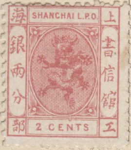
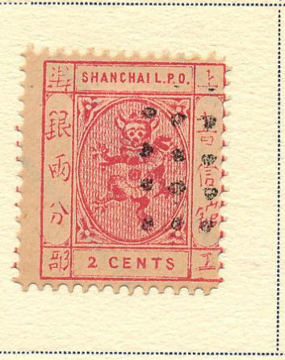
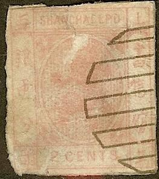
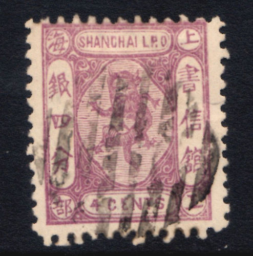
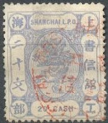
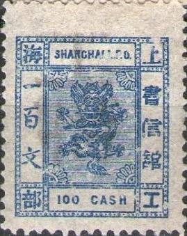
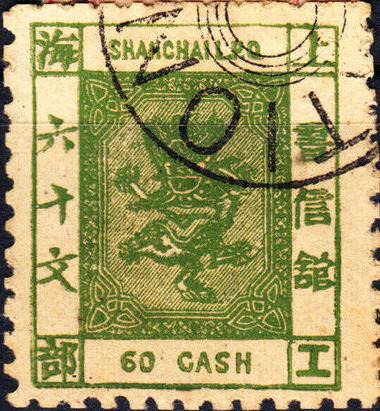
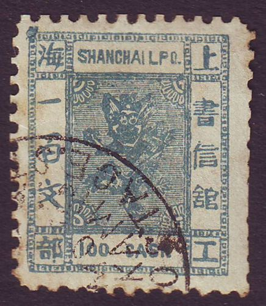
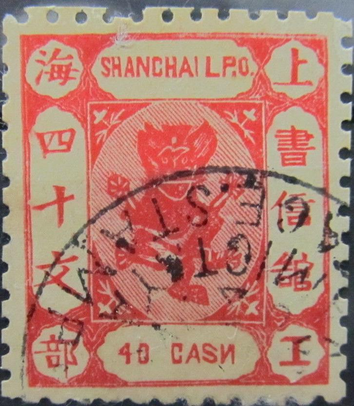
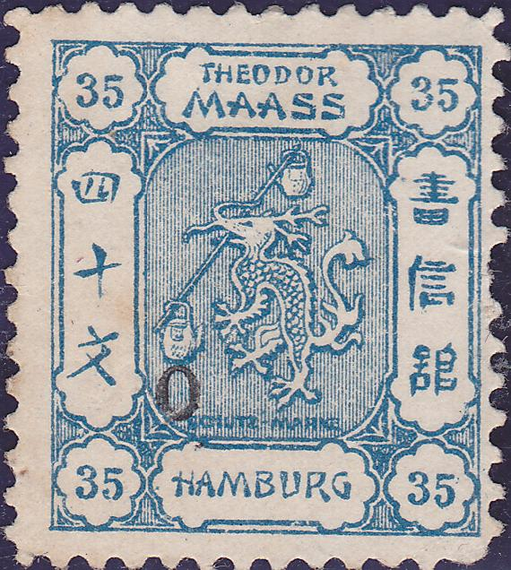

Return To Catalogue - Large dragon issues of 1865 - China
A port in China.
Note: on my website many of the
pictures can not be seen! They are of course present in the
catalogue;
contact me if you want to purchase the catalogue.
2 cents red 4 cents lilac 8 cents blue 16 cents green Surcharged with value in cand
'1 CAND' on 2 c red '1 CAND' on 4 c lilac '1 CAND' on 8 c blue '1 CAND' on 16 c green '3 CANDS' on 2 c red '3 CANDS' on 16 c green
Value of the stamps |
|||
vc = very common c = common * = not so common ** = uncommon |
*** = very uncommon R = rare RR = very rare RRR = extremely rare |
||
| Value | Unused | Used | Remarks |
| Usually perforated 12 | |||
| 2 cents | *** | R | Also exists perforated 15: R |
| 4 cents | R | R | |
| 8 cents | R | R | |
| 16 cents | RR | RR | |
| Surcharged | |||
| 1 CAND on 2 c | R | R | Blue overprint Perforated 15: RR |
| 1 CAND on 4 c | R | R | Blue, black or red (RRR) overprint |
| 1 CAND on 8 c | RR | RR | Blue or red (RRR) overprint |
| 1 CAND on 16 c | RRR | RRR | Blue or red overprint |
| 3 CANDS on 2 c | RR | RR | Blue overprint |
| 3 CANDS on 16 c | RRR | RRR | Blue overprint |
Two forgeries of the 2 c are described in 'Album Weeds', in the first forgery there is a dot behind 'CENTS' (the genuine stamp doesn't have such a dot).


(Forgeries)
The above forgeries can also be found in 'The Fournier Album of Philatelic Forgeries', but they were probably not produced by Fournier, only sold. I think they were made by Spiro. The 2 c is the first forgery described in Album Weeds, it has a curly bottom '2'.

Page from a Fournier Album. Note the bogus dots cancel.
Another type of forgery (Spiro?) of the 2 c with a dot behind
'CENTS'. Note the bogus cancel.
Other forgeries, examples:

Forgeries with a very small circular cancel "SHANGHAI 1-7 91
1-2 N"

Forgery with Chinese inscriptions and cancel 'YOKOHAMA 8 12:90'

Forgery of the 2 c
Highly dubious 2 c stamp.
 


Most likely forgeries
1 cand brown 1 cand yellow 3 cand yellow 3 cand red 6 cand grey 6 cand green 9 cand blue 12 cand olive 12 cand brown Surcharged with value in


'1 CAND' on 3 cand yellow '1 CAND' on 3 cand red '1 CAND' on 6 cand grey '1 CAND' on 6 cand green '1 CAND' on 9 cand blue '1 CAND' on 12 cand olive '1 CAND' on 12 cand brown
Value of the stamps |
|||
vc = very common c = common * = not so common ** = uncommon |
*** = very uncommon R = rare RR = very rare RRR = extremely rare |
||
| Value | Unused | Used | Remarks |
| Usually perforated 15 | |||
| 1 cand brown | *** | *** | Error 1 c red (RRR) |
| 1 cand yellow | *** | *** | Perforated 11 /12: RR Also exists printed on yellow paper |
| 3 cand yellow (orange) | R | R | |
| 3 cand red | R | R | Also exists printed on red paper. |
| 6 cand grey | R | R | |
| 6 cand green | RR | RR | |
| 12 cand olive | R | R | |
| 12 cand brown | RR | RR | |
| Surcharged | |||
| 1 CAND on 3 c yellow | RRR | RRR | Blue overprint; only 6 stamps known |
| 1 CAND on 3 c red | RR | RR | Also exists on red paper (RRR) |
| 1 CAND on 6 c grey | RRR | RRR | Blue or red overprint |
| 1 CAND on 6 c green | RR | RR | Blue overprint |
| 1 CAND on 9 c | RRR | RRR | Blue overprint |
| 1 CAND on 12 c olive | RRR | RRR | Blue or red overprint |
| 1 CAND on 12 c brown | RRR | RRR | Blue overprint |

Forgery of the 1 Cand. There is a large distance between 'L.P.'
and 'O'. Also there is no dot behind 'CAND'. I've seen it with a
cancel constisting of dots. This is the second forgery of the 1
Cand described in Album Weeds.
Are these Spiro forgeries? In the 1 Cand, the inscription is 'GAND' and 'SHANCHAI' (it is the first forgery of the 1 Cand described in Album Weeds). In the 3 Cand, the '3' is totally different from the genuine stamps. The 6 Cand has inscription 'CANDI'.


Page from a Fournier Album
The above forgeries can be found in 'The Fournier Album of Philatelic Forgeries', but they were probably not produced by Fournier, only sold. I think they were made by Spiro. Note the typical 'Spiro' cancels on these forgeries. These forgeries are different from the 'Spiro' ones above.
Other forgery





20 cash violet 20 cash green (1884) 20 cash grey (1888) 40 cash red 40 cash brown (1884) 40 cash black (1888) 60 cash green 60 cash violet (1884) 60 cash red (1888) 80 cash blue 80 cash red (1884) 80 cash green (1888) 100 cash brown 100 cash yellow (1884) 100 cash blue (1888) Surcharged in cash


(Reduced size)
'20 CASH' (blue) on 40 cash red '20 CASH' (blue) on 40 cash brown '20 CASH' (blue)(in a frame) on 40 cash brown '20 CASH' (blue) on 80 cash red '20 CASH' (red) on 80 cash green '20 CASH' (red) on 100 cash blue '40 CASH' (blue) on 80 cash red '40 CASH' (blue or red) on 100 cash yellow '60 CASH' (blue) on 80 cash blue '60 CASH' (blue) on 100 cash brown '60 CASH' (blue) on 100 cash yellow '100 CASH' (red) on '20 CASH' (in a frame) on 100 cash yellow
Value of the stamps |
|||
vc = very common c = common * = not so common ** = uncommon |
*** = very uncommon R = rare RR = very rare RRR = extremely rare |
||
| Value | Unused | Used | Remarks |
| Usually perforated 15 | |||
| 20 cash violet | *** | *** | Also exists with peforation 12 and 12 x 15. |
| 20 cash green | *** | *** | Also exists with perforation 12 and 12 x 15. |
| 20 cash grey | ** | ** | Exists with watermark (1889) |
| 40 cash red | *** | *** | Also exists with perforation 12. |
| 40 cash brown | *** | *** | |
| 40 cash black | *** | *** | Exists with watermark (1889) |
| 60 cash green | R | R | Also exists with perforation 12. |
| 60 cash violet | *** | *** | Also exists perforated 12 x 15. |
| 60 cash red | *** | *** | Exists with watermark (1889) |
| 80 cash blue | R | R | |
| 80 cash red | *** | *** | |
| 80 cash green | *** | *** | Exists with watermark (1889) with perforation 12. |
| 100 cash brown | R | R | Also exists with perforation 12. |
| 100 cash yellow | *** | *** | |
| 100 cash blue | *** | R | Exists with watermark (1889) with perforation 12. |
| Surcharged | |||
| 20 CASH on 40 c red | R | R | Blue overprint |
| 20 CASH on 40 c brown | R | R | Blue overprint |
| 20 CASH on 40 c brown (in frame) | R | R | Blue overprint |
| 20 CASH on 80 c red | *** | *** | Blue overprint |
| 20 CASH on 80 c green | R | R | Red overprint |
| 20 CASH on 100 c blue | R | R | Red overprint |
| 40 CASH on 80 c red | *** | *** | Blue overprint |
| 40 CASH on 100 c yellow | *** | *** | Blue or red overprint |
| 60 CASH on 80 c blue | R | R | Blue overprint |
| 60 CASH on 100 c brown | R | R | Blue overprint |
| 60 CASH on 100 c yellow | *** | *** | |
| 100 CASH on 20 c on 100 c | R | R | |
 


Kamigata forgeries, with 'IMITATION'
cancel. The last stamp appears to have a 'KAMIGATA POSTAGE ST...'
cancel.



Other Kamigata forgeries, the
"H" of "CASH" is an inverted "N"
and the "S" of this word is totally flattened.

Kamigata forgery of the 20 cash value.


Dubious items
80 cash brown? Possibly a forgery.
20 cash forgery, reduced size

Some kind of advertisement label from 'Theodor Maass' of Hamburg
in a similar design.
Shanghai 1890-1893 and miscellaneous


{kind=link}
{kind=link}
{kind=link}
{kind=link}
{kind=link}
{kind=link}
{kind=link}
{kind=link}
{kind=link}
{kind=link}
{kind=link}
{kind=link}
{kind=link}